打开本章课件逐页中文翻译：保留原页码、原文与来源，可在学完一节后对照相应页面。
1为什么需要策略学习？
回顾第 5-7 章的「视觉开环」范式（课件 p36）：预测位姿/抓取/可供性 → 运动规划到达 → 启发式抓取执行。它的两个局限：
- 操作复杂度有限：只能处理预定义好的简单操作（开抽屉、开柜门）；复杂操作（转笔）超出框架能力——主要瓶颈在于启发式规则的设计；
- 开环执行：规划一次、执行到底，过程中不再接收新的视觉反馈——「闭着眼睛做事」。一旦执行中出现意外（物体滑动、初始误差），任务就会失败。
第 6 章介绍过，高频重复「感知-规划-执行」循环可以把开环近似成闭环。另一条路线是学习随反馈调整动作的策略：
策略学习（Policy Learning）：构建一个根据环境状态变化动态响应、采取合理动作的 Policy。Policy 拥有闭环执行的潜力——每个时刻都重新决策，根据状态变化调整动作，为鲁棒性和高动态操作提供基础。
课件指出两条路（p39-40）：有专家演示 → 模仿学习（监督学习）；没有最优策略 → 强化学习（trial and error）。本章讲前者，第 9 章讲后者。
在进入策略学习之前，课件快速回顾了「视觉开环」范式的两个延伸方向（p31-35）：
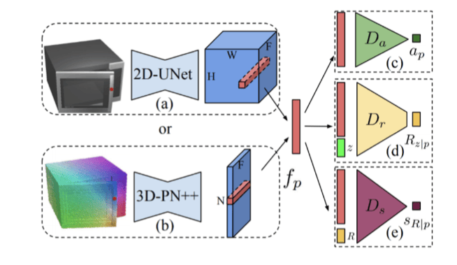
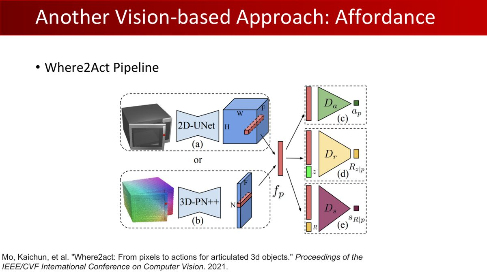
以及第 7 章介绍过的透明物体工作（ASGrasp）在本章的回顾版：
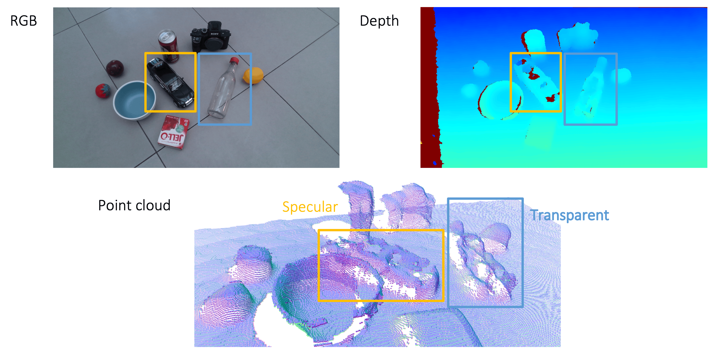
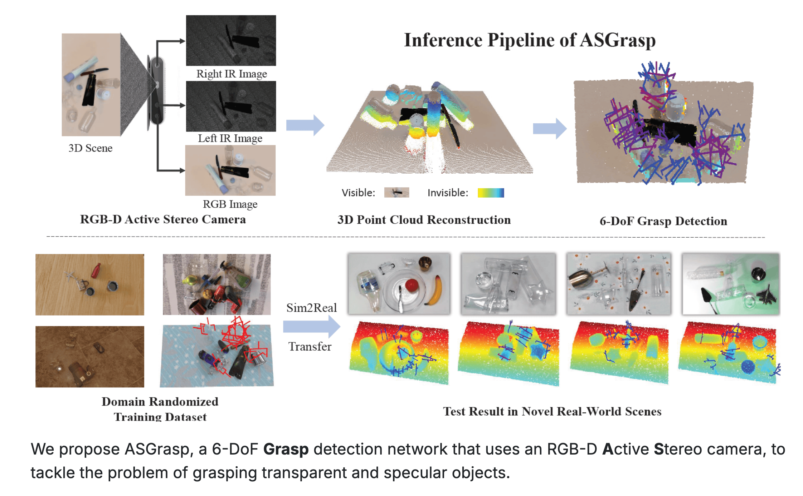
2基础术语与 MDP
小车的完整状态可包括位置和速度；单张图像可能只显示位置。两辆小车处在同一位置但速度相反时，应采取不同动作，所以单张图像不是充分状态。MDP 的转移只依赖当前完整状态和动作；POMDP（部分可观测马尔可夫决策过程）只能获得观测，可用观测—动作历史或信念状态辅助决策。
完整问题还需初始状态分布 $\rho_0$，以及时域 T 或折扣因子 γ。$S,\mathcal A$ 分别为状态与动作集合，$\mathcal T$ 为转移概率，r 为奖励。图像策略通常写作 $\pi_\theta(a_t|o_t)$，带记忆策略写作 $\pi_\theta(a_t|h_t)$；$h_t$ 包含已有观测和动作。
| 符号 | 含义 | 备注 |
|---|---|---|
| 状态 $s_t$ | 环境的真实状态 | 通常隐藏在观测之下 |
| 观测 $o_t$ | 对环境的观测（点云、图像） | 蕴含状态信息，但局部、片面。观测是状态的体现，状态是观测的本质 |
| 动作 $a_t$ | 在状态/观测下采取的动作 | Policy 的输出 |
| 策略 $\pi(a_t|s_t)$ | 给定状态下的动作分布 | 用参数 $\theta$ 参数化：$\pi_\theta$ |
数学框架：马尔可夫决策过程（MDP） $\mathcal{M} = \{S, \mathcal{A}, \mathcal{T}, r\}$——动作空间、状态转移 $p(s_{t+1}|s_t,a_t)$、奖励 $r(s_t,a_t)$。现实中通常只能观测到部分状态，于是有 POMDP：增加观测空间 $\mathcal{O}$ 与观测概率 $\mathcal{E}: p(o_t|s_t)$——智能体对 $s_t$ 的认识来自相关的 $o_t$，并据此作出决策。
任何状态下的决策只需依据当前状态，当前状态已包含过去历史的充分信息。实际策略可能只能获得部分观测——司机超车时依赖几秒前看到的后视镜信息，这说明需要把历史信息纳入决策，才能补足当前观测中的状态信息。完整状态的马尔可夫假设与观测是否充分，是两个不同问题；§7 将继续讨论。
模仿学习的一个经典例子（课件 p39）：PointGoal Navigation——用传统路径规划算法（A*）当「老师」，训练视觉策略在没有地图的新场景里导航。把传统算法变成监督信号，这是模仿学习最优雅的用法。
3行为克隆：最朴素的模仿
符号与损失：下面平方误差式中的 $\pi_\theta(s)$ 在此表示确定性动作输出。若学习随机策略，常用 $L_{BC}=-\frac1N\sum_i\log\pi_\theta(a_i^*|o_i)$。对固定方差的单高斯，最大似然等价于加权平方误差；多峰动作可以用混合、隐变量、扩散等分布表示，让模型保留不同的可行解。
行为克隆（Behavior Cloning, BC）：把模仿学习当成监督学习。给定专家数据集 $D = \{(s_i, a_i^*)\}_{i=1}^N$，最小化预测动作与专家动作的差异：
$$ \theta^* = \arg\min_\theta \sum_{(s_i, a_i^*) \in D} \|\pi_\theta(s_i) - a_i^*\|^2 $$
BC 的历史比想象中早：1989 年就有研究者用神经网络把视觉输入映射到车辆行为（方向盘、油门、刹车）——ALVINN 系统；2016 年深度学习版（更深网络、更多数据、更好校正）展示了不错的自动驾驶能力。
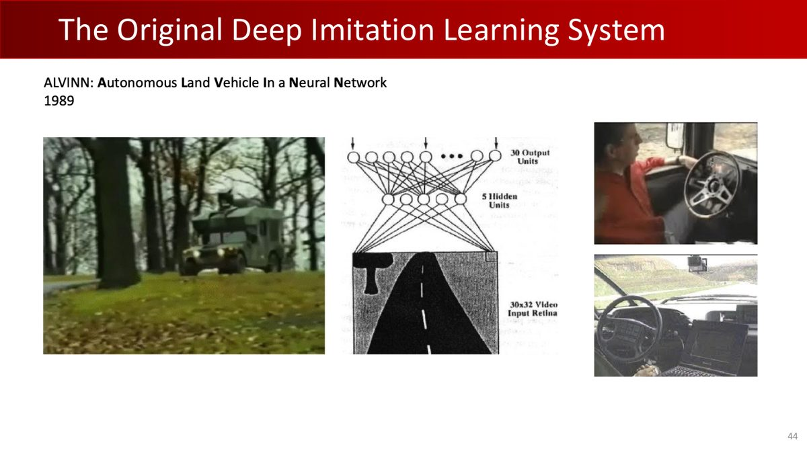
课件紧接着问了一个尖锐的问题（p45）：「Does it work?」——「No, because of distribution drift!」下一节用闭环轨迹解释这种分布偏移。
4Distribution Shift：BC 的分布风险
分布偏移（Distribution Shift）：模仿学习依赖训练与测试数据分布一致；一旦被打破，模型难以泛化，且偏差随执行步数不断放大——一开始可能与训练分布一致，执行步数越多偏差越大，可能导致任务失败，恢复程度取决于反馈与策略覆盖。
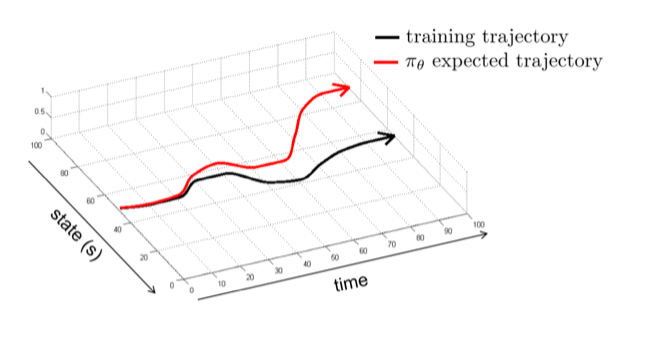
三个原因（笔记）：
- 专家演示只覆盖状态空间很小的一部分（专家成功路径上的状态）；
- $\pi_\theta$ 不可能完美复制 $\pi^*$，再小的误差也会让智能体逐渐偏离专家状态分布；
- 一旦进入训练数据中未曾出现的状态，BC 策略可能无法正确决策 → 错误累积 → 完全失败。
「在陌生的环境里有人带路，但之后开始乱走，走到一个完全陌生的环境就会迷路。除非有专家重新指导，否则无法回到正确轨迹。」——这就是 BC 的困境：它学会的是「在专家走过的路上走」，而不是「走向目标」。
尽管有此局限，数据量足够大时 BC 依然表现不错（笔记）——增加演示时，既要关注数量，也要检查是否覆盖了部署时可能遇到的状态。
5解药：DAgger 与教师策略
Distribution Shift 的根源是「两个分布不对齐」：训练分布 $p_{data}(o_t)$ vs 策略执行分布 $p_\pi(o_t)$。两条思路：改变 $p_{data}$（扩充数据覆盖执行分布）或改变 $p_\pi$（拟合专家避免偏离）。
5.1 DAgger：错了就请教专家
Dataset Aggregation（DAgger）改变 $p_{data}$——主动收集策略执行时遇到的状态，向专家请教正确动作，加入训练集：
- 用初始专家数据集 $D$ 训练初始策略 $\pi_1$；
- 迭代 $N$ 轮：① 执行策略 $\pi_i$ 收集状态序列（Rollout）；② 对每个状态查询专家 $\pi^*$ 得到 $a_t^*$；③ 聚合 $D \leftarrow D \cup \{(s_t, a_t^*)\}$；④ 重训得 $\pi_{i+1}$。
每个新状态都由专家给出纠错动作。实施 DAgger 时，要确认专家能可靠标注这些状态，学生模型能表示相应的恢复策略。其理论保证还依赖可查询专家、合适的损失与学习算法等条件。
5.2 动作标签的其他来源（课件 p55）
- 从最优解获取：用 A* 等传统算法直接算出最短路径上的动作标签——无需真人演示；
- 从教师策略学习：假设存在拥有特权信息（Privileged Knowledge）的教师策略（仿真真实状态、物体精确位姿、物理参数）。学生策略（只看到图像/点云）执行时，教师在线纠正——与固定专家轨迹不同，教师具有在线适应与纠错能力。
「教师看特权信息、学生只看观测」的蒸馏思想，可用于训练时信息多、部署时观测有限的情形，第 9 章的强化学习也会用它。
6遥操作：专家数据从哪来
BC 需要专家数据。两大来源（笔记）：合成数据（量大，但外观/物理差异 → 需要域随机化）与遥操作数据（真/虚拟场景采集，减少差异，但代价高昂）。
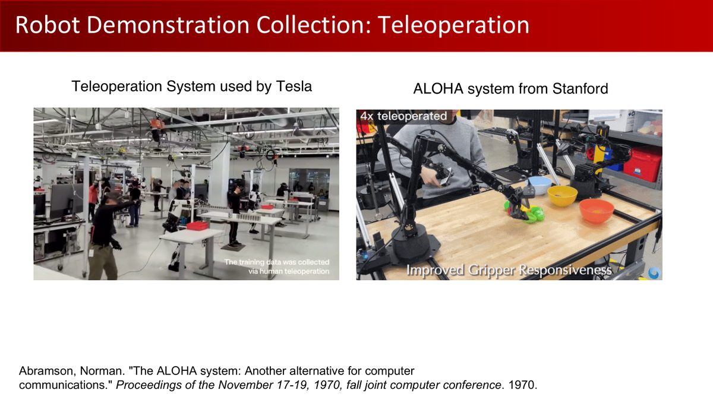
课件还展示了特斯拉 Optimus 的电池分拣遥操演示（p49），以及 Human-in-the-Loop IL（Mandlekar et al., 2020）——人在回路中远程干预，把失败状态的纠正动作也变成训练数据（正是 DAgger 思想的工程化）。
遥操作可采集状态—动作演示。记录数据规模时需区分帧数、轨迹数、物体数与任务数；演示覆盖范围和质量与数量同样重要。比较数据规模时，先确认统计单位和来源，再结合 BC 的监督目标分析闭环分布变化。
7部分观测与因果混淆
现实世界通常只能获得部分观测，$\pi(a_t|o_t)$ 会面对「相同观测、不同正确动作」的一对多映射。经典的例子：司机超车依赖几秒前看到的后视镜信息——当前观测里那辆车已经不在视野中。
自然解法：引入历史信息 $\pi(a_t | o_{t-k}, \dots, o_t)$，用 RNN 或 Transformer 实现。但带来两个新问题（笔记）：
- 过拟合：输入维度大增，模型容易学到虚假关联（spurious correlations）；
- 因果混淆（Causal Confusion）：把相关性误当因果——自动驾驶数据中，每次踩刹车都伴随「前方有行人（因）+ 刹车灯亮（果）」。模型若只学到「刹车灯亮 → 踩刹车」的关联，就会在「有行人但刹车灯没亮」时撞上去。历史信息让输入维度更高、虚假关联更多，加剧这个风险。
8多峰行为：对动作分布建模
假设障碍物在正前方，专家以相同概率选择向左或向右绕行，动作分别为 −1 和 +1。平方误差最优单值是条件均值 0，恰好指向障碍物。模型应采样一个合理模式，再检查碰撞，并让后续时刻保持一致的绕行方向。
MLP=多层感知机，GMM=高斯混合模型，CVAE=条件变分自编码器，ELBO=证据下界；bins 指离散区间。RNN=循环神经网络，Transformer 是基于注意力的序列模型，用于从历史提取信息。
第 5-7 章讨论过的多解问题，也会出现在策略学习中：同一个状态可能有多种同样合理的动作（避障时左绕右绕都可以）。BC 用 MLP 直接回归会输出「平均动作」——
「开车避障时，你可以左打方向盘或右打方向盘，但模型为了降低 Loss 会输出平均值——啥都不动，直直撞上去。」（笔记中的例子）
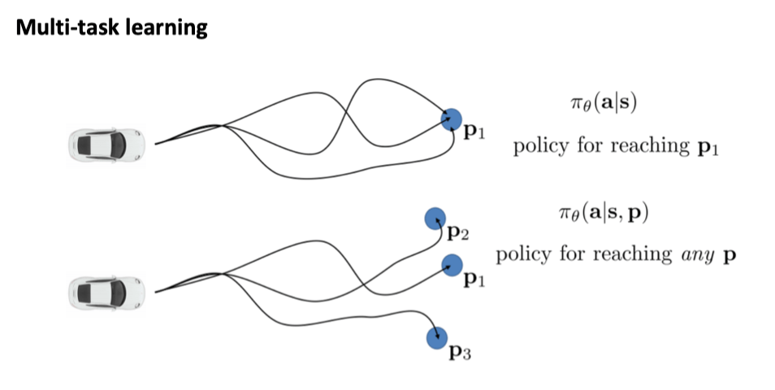
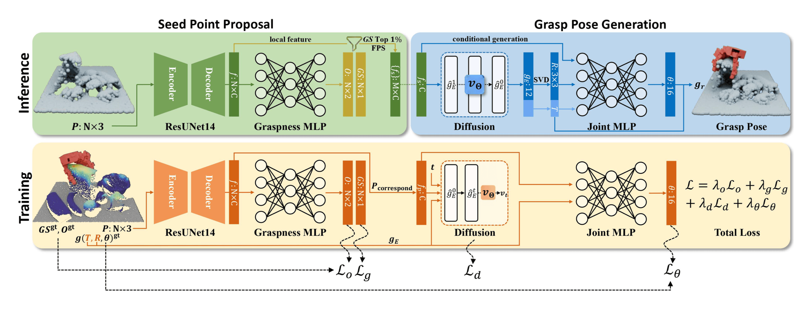
解法：显式建模动作分布 $\pi(a|s)$，四种方案：
| 方案 | 做法 | 代表 |
|---|---|---|
| 高斯混合模型（GMM） | $p(a|s) = \sum_k w_k(s)\mathcal{N}(a|\mu_k(s), \Sigma_k(s))$ | 简单直观；难定 $K$ |
| 隐变量模型（CVAE） | 采样 $z \sim p(z|s)$，解码 $p(a|s,z)$；ELBO 训练 | ALOHA 系列 |
| 扩散模型 | 从噪声迭代去噪生成动作 | Diffusion Policy |
| 自回归离散化 | $p(a|s) = \prod_i p(a_i|s, a_{1..i-1})$，每维离散成 bins 做分类 | Transformer 类策略 |
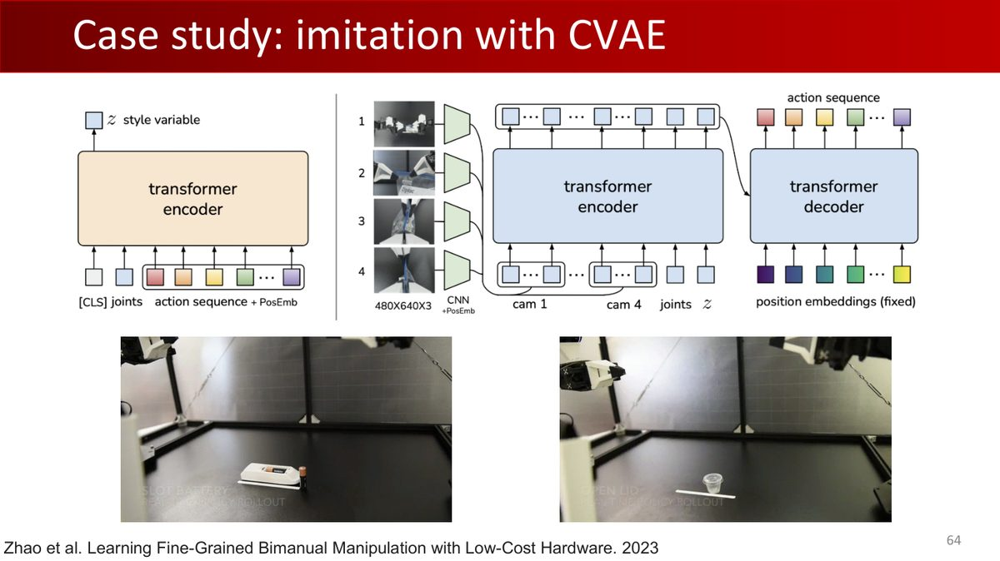
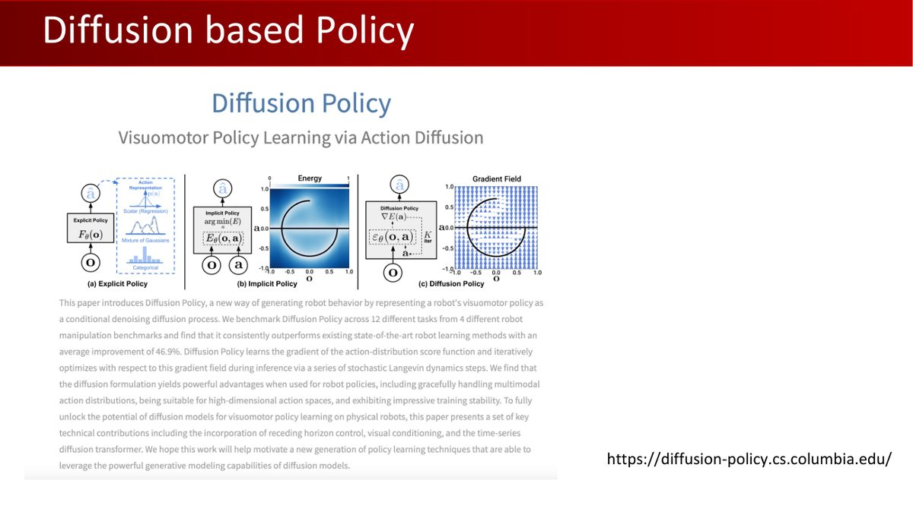
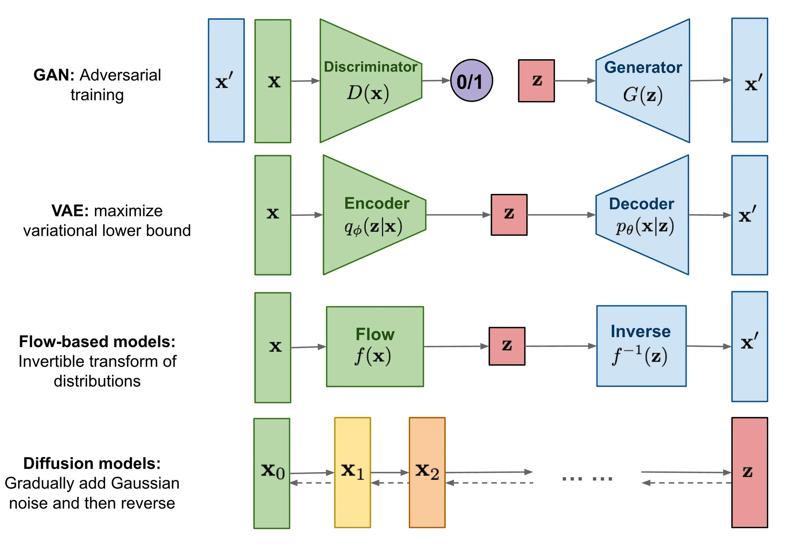
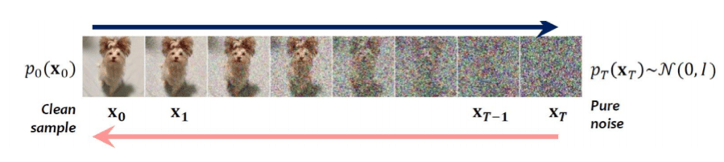
扩散与流匹配都可用于表达多峰动作分布；是否更快或更准确取决于网络、采样步数和任务。这些方法可以保留多种动作模式；演示覆盖和闭环分布偏移，则还需要通过数据采集与纠错训练处理。
9多任务学习与 IL 的局限
专家数据常混合多个任务（导航去不同目的地）。与其每任务训一个策略，不如训目标条件化策略 $\pi(a|s, g)$（课件 p70-71）：
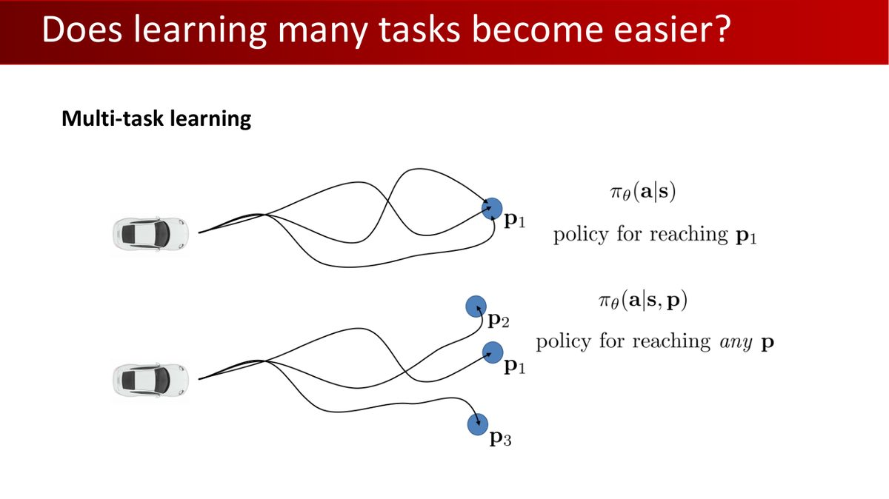
- 数据效率：所有任务数据训练共享模型；
- 知识共享：不同任务共享子结构（「从北大无论开车去哪，都得先开出北大东门」）；
- 新风险：目标空间 $g$ 也有分布偏移——测试时遇到没见过的目标，泛化面临考验。
模仿学习的三大局限（笔记总结）
- 依赖专家数据：大量高质量演示，获取成本高；
- 缺少主动回报优化：仅复现演示通常难以主动改善任务回报；模型对噪声演示去噪后，也可能优于部分专家样本，因此其表现上限需要结合数据与模型分析；
- 高动态任务需要充分纠错覆盖：需要精确反馈与快速调整的任务（指尖转笔），可能对误差敏感，有限演示难覆盖扰动；结合闭环反馈、纠错采集和合适控制接口仍可使用模仿学习。
想根据任务回报主动探索改进，就轮到强化学习登场——第 9 章。
10强化学习引言
本节引入强化学习的目标与轨迹分布，帮助衔接第 9 章的策略梯度推导。先区分两个信号：专家动作告诉机器人“模仿哪一个动作”，奖励告诉机器人“当前行为带来多好结果”。
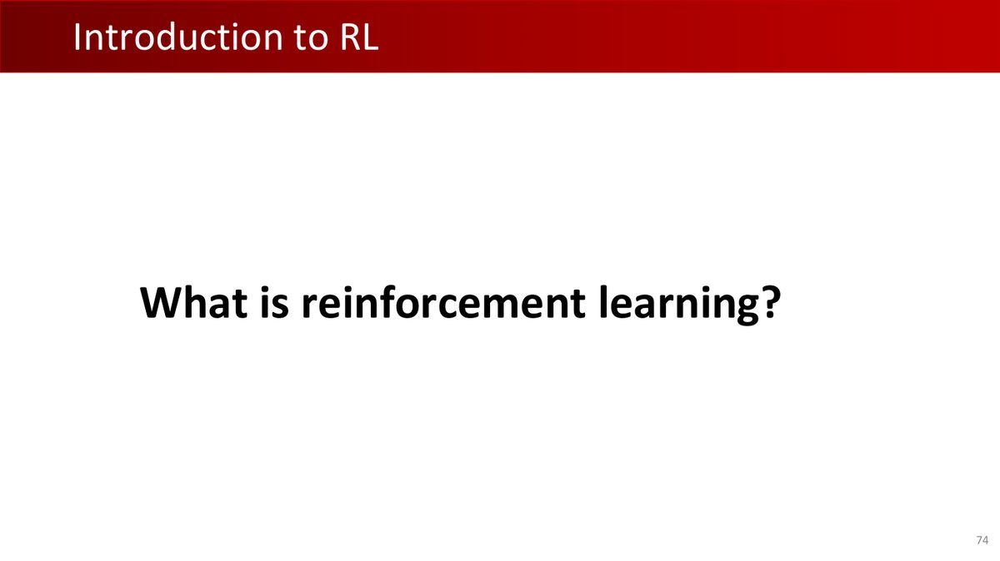
RL 与监督学习的本质区别（课件 p76）：监督学习学「答案是什么」（数据带标签）；RL 学「怎样做更好」（只有奖励信号，且可能延迟、稀疏）。
RL 的目标：学习策略 $\pi_\theta$，最大化轨迹 $\tau = (s_1, a_1, s_2, \dots)$ 上的累积奖励期望：
$$ \theta^* = \arg\max_\theta \mathbb{E}_{\tau \sim p_\theta(\tau)}\left[\sum_t r(s_t, a_t)\right], \qquad p_\theta(\tau) = p(s_1)\prod_{t=1}^T \pi_\theta(a_t|s_t)\,p(s_{t+1}|s_t, a_t) $$
- 有限时间界：最大化固定 $T$ 步内总奖励期望（$\sum_{t=1}^T \mathbb{E}[r(s_t,a_t)]$，$p_\theta(s_t,a_t)$ 是 $t$ 时刻的访问边际分布）；
- 无限时域：可以研究折扣总回报，也可以研究长期平均奖励。后者需要确认平稳分布的存在性、唯一性，以及相应极限是否成立；
- 关键性质：即使奖励函数不平滑，在策略可微、可交换微分与期望等正则条件下，期望奖励可对 $\theta$ 求导——这让梯度优化成为可能。这正是第 9 章策略梯度（Policy Gradient）的立足点。
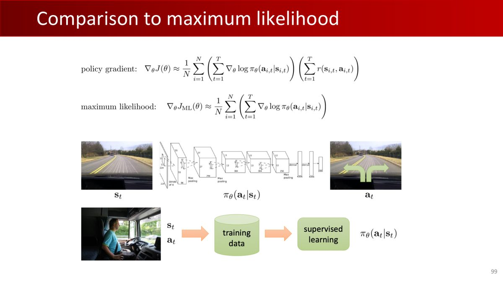
11本章小结
| 核心概念 | 一句话解释 |
|---|---|
| 策略学习 | 学习「状态 → 动作」的闭环策略，替代开环规划执行 |
| MDP / POMDP | 完全观测 / 部分观测的决策数学框架 |
| BC | 把专家动作作为监督信号；连续确定性回归可用 MSE，分布策略可用负对数似然 |
| Distribution Shift | 误差累积 → 状态偏离专家分布 → 更大误差的恶性循环 |
| DAgger / 教师策略 | 主动收集执行状态请专家标注 / 特权信息教师在线纠错 |
| 非马尔可夫性 | 部分观测需要历史信息（RNN/Transformer），但带来过拟合与因果混淆 |
| 多峰行为 | 直接回归输出「平均动作」；GMM/CVAE/扩散/自回归建模分布 |
| 目标条件化 | $\pi(a|s,g)$ 共享多任务数据，代价是目标空间分布偏移 |
第 9 章学习如何用任务回报优化策略：强化学习与策略梯度——REINFORCE、方差削减、Actor-Critic，以及配套的作业 3（PPO 让四足机器人学会走路）。
12动手实践
本章没有原版作业（作业 3 在第 9 章），但 Distribution Shift 值得亲手观察一次——这个实验用 少量 NumPy 代码展示训练覆盖不足对闭环行为的影响。
练习 1：复现 BC 的 Distribution Shift（30 分钟）
环境：一辆小车在 1D 轨道上，专家策略让它朝目标 $x=10$ 匀速前进。用 BC 学到的策略闭环执行，观察误差如何滚雪球：
import numpy as np
# 环境：x' = x + a（动作就是速度）
def expert_policy(x):
return 1.0 if x < 10 else 0.0
# 只收集 [0,1] 内的单步专家标注；不采集完整轨迹
np.random.seed(0)
data = []
for _ in range(20):
x = np.random.uniform(0, 1)
data.append((x, expert_policy(x)))
xs = np.array([d[0] for d in data])[:, None]
ys = np.array([d[1] for d in data])
# BC：最小二乘拟合线性策略（专家数据只覆盖 x∈[0,1] 附近！）
W = np.linalg.lstsq(np.hstack([xs, np.ones_like(xs)]), ys, rcond=None)[0]
bc = lambda x: W[0]*x + W[1]
# 闭环执行：从 x=0.5 出发，观察轨迹
x = 0.5; traj = [x]
for t in range(15):
x += bc(x); traj.append(x)
print("BC 闭环轨迹终点:", np.round(traj[-1], 2), "（起点0.5、15步：专家终点为10.5）")
print("轨迹:", np.round(traj, 2))
print("训练状态范围:", xs.min(), xs.max())
print("训练MSE:", np.mean((xs[:,0]*W[0]+W[1]-ys)**2))
x_expert = 0.5
for _ in range(15): x_expert += expert_policy(x_expert)
print("专家闭环终点:", x_expert)观察：训练状态确实只在 $[0,1]$ 内，训练 MSE 接近零，BC 却在闭环中继续向前，终点约为 15.5；专家到 10.5 后停止。训练数据未包含停止区域，评估时应把闭环轨迹与训练状态覆盖范围一起检查。挑战：用 DAgger 收集新状态的专家标注，并检查线性策略能否表示停止阈值；必要时选择更合适的模型，再比较闭环结果。
练习 2：多峰行为的平均陷阱（15 分钟）
# 专家在 x=0 处：一半概率 a=-1（左绕），一半概率 a=+1（右绕）
np.random.seed(1)
N = 1000
a_true = np.where(np.random.rand(N) < 0.5, -1.0, 1.0)
# 用「最小 MSE 估计」拟合单一动作（等价于 BC 回归）
a_bc = a_true.mean()
print("专家的两个峰: {-1, +1}，BC 预测:", np.round(a_bc, 3), "→ 若两侧绕行，中间动作可能不安全")两个练习约 45 分钟，纯 numpy。练习 1 的 DAgger 挑战强烈建议完成——比较增加纠错数据前后的闭环轨迹，同时检查策略类能否表示专家动作。学有余力可跑 Diffusion Policy 官方 demo（diffusion-policy.cs.columbia.edu）看真实机器人。
理解检查
当前相机图像相同，机器人运动速度不同，正确动作能否不同？（能，观测可能不充分。）DAgger 新标签来自谁？（专家对学生所到状态给出纠错动作。）多峰动作的均值一定可执行吗？（不一定。）
先遮住括号中的答案，用本章符号和一个具体例子说明理由。遇到疑问时，对照相应节的模型假设检查自己的推理。
附A术语表
| 术语 | 解释 |
|---|---|
| 策略（Policy） | 状态/观测 → 动作分布的函数 $\pi(a|s)$，策略学习的核心对象 |
| MDP / POMDP | 马尔可夫决策过程 / 部分可观测 MDP（增加观测空间与观测概率，并用历史或信念状态决策） |
| 行为克隆（BC） | 以专家动作监督训练；MSE 只是连续动作的一种损失 |
| Distribution Shift | 策略执行分布偏离专家数据分布导致的误差累积崩溃 |
| DAgger | 数据集聚合：执行策略收集状态 → 专家标注 → 并入数据集重训 |
| Rollout | 让策略在环境中执行一个回合，收集状态/动作序列 |
| 特权信息（Privileged Knowledge） | 教师策略可用的仿真真实状态、精确位姿等学生看不到的信息 |
| 遥操作（Teleoperation） | 人远程操控机器人采集演示数据（动捕/主从同步） |
| 因果混淆 | 把相关当因果：学到「刹车灯亮→刹车」而非「行人→刹车」 |
| 多峰行为 | 同一状态的多个合理动作；直接回归输出无效的平均 |
| CVAE | 条件变分自编码器：隐变量建模动作分布（ALOHA 使用） |
| Diffusion Policy | 用扩散模型从噪声迭代生成动作的策略 |
| 自回归离散化 | 逐维分解动作分布，每维离散成 bins 做分类 |
| 目标条件化 | $\pi(a|s,g)$：共享多任务数据的策略 |
附B课件 105 页完整索引
原版 Lecture 8 课件共 105 页（GitHub 原文件）。下表逐页列出内容及在本教程中的位置：
| 页码 | 页面内容 | 在教程中的位置 |
|---|---|---|
| p1 | 封面：Lecture 8 - Policy I（主讲：李祎老师） | 封面区 |
| p2 | Logistics：期中考试（40%，4/21，A4 cheat sheet 一页） | §12（背景） |
| p3 | 考试题型：选择/判断/简答（可含数学推导） | §12（背景） |
| p4 | 作业 2 发布（15%，位姿估计抓取） | §12（呼应第 5 章） |
| p5 | 作业 2/3 真机实验组队（≤4 人） | §12（背景） |
| p6 | 主题页：条件抓取生成模型 | §1（回顾第 7 章） |
| p7 | 数据：DexGraspNet 2.0（回顾） | §1（回顾） |
| p8 | 扩散式灵巧手位姿生成（回顾） | §1（回顾） |
| p9 | Stage 1：Where to grasp（回顾） | §1（回顾） |
| p10 | Stage 2：How to grasp（回顾） | §1（回顾） |
| p11 | 灵巧抓取位姿扩散模型（回顾） | §1（回顾） |
| p12-13 | 真机实验与 SOTA（回顾） | §1（回顾） |
| p14 | Scaling Law（回顾） | §1（回顾） |
| p15-16 | 灵巧手包裹能力 + 总结（回顾） | §1（回顾） |
| p17 | 深度传感问题：透明物体失败案例 | §1（回顾第 7 章 §7） |
| p18 | Demo：GraspNet-baseline 对比 | §1（回顾） |
| p19-20 | ASGrasp 作者信息（回顾） | §1（回顾） |
| p21-25 | DREDS 域随机化五方面（回顾） | §1（回顾） |
| p26 | ASGrasp 管线（回顾） | §1（回顾） |
| p27-29 | ASGrasp 实验（回顾） | §1（回顾） |
| p30 | 3D 视觉抓取总结 | §1 |
| p31 | 走向操作：可供性 Where2Act（ICCV 2021） | §1（承接第 7 章） |
| p32 | Where2Act 流程 | §1（承接） |
| p33 | Where2Act 结果 | §1（承接） |
| p34 | VAT-Mart（ICLR 2022）：操作轨迹提议 | §1（承接） |
| p35 | VAT-Mart 结果 | §1（承接） |
| p36 | 视觉开环方法总结与局限 | §1 |
| p37 | 主题页：策略学习（借鉴 CS285） | §1 结尾 |
| p38 | 术语与记号 | §2 |
| p39 | 监督式策略学习：PointGoal Navigation | §2 |
| p40 | 强化学习：trial and error | §10 |
| p41 | 主题页：模仿学习（借鉴 CS285） | §3 开头 |
| p42 | 术语与记号（IL） | §3 |
| p43 | 模仿学习图示 | §3 |
| p44 | 原始深度模仿学习系统（ALVINN） | §3 |
| p45 | Does it work? No——distribution drift！ | §4 |
| p46 | Does it work?（图示） | §4 |
| p47 | Why did that work?（数据多样性） | §4 |
| p48 | 遥操作采集：Tesla 系统与 Stanford ALOHA | §6 |
| p49 | Tesla Optimus 电池分拣与纠错演示采集 | §6 |
| p50 | Human-in-the-Loop IL（Mandlekar et al. 2020） | §6 |
| p51-54 | Can we make it work more often? / What's the problem? | §4-5（引导） |
| p55 | 动作标签其他来源：最优解 / 教师策略 | §5.2 |
| p56 | Can we make it work without more data? | §5（引导） |
| p57 | Why might we fail to fit the expert? | §7-8（引导） |
| p58-59 | How can we use the whole history?（历史信息） | §7 |
| p60 | Aside：why might this work poorly?（因果混淆） | §7 |
| p61-63 | Why might we fail to fit the expert?（多峰） | §8（引导） |
| p64 | 案例：ALOHA 的 CVAE 模仿学习（Zhao et al. 2023） | §8 |
| p65 | Why might we fail?（继续） | §8 |
| p66 | Diffusion Policy | §8 |
| p67-68 | Why might we fail?（继续） | §8 |
| p69 | 自回归离散化 | §8 |
| p70 | 多任务学习：学很多任务是否更容易？ | §9 |
| p71 | 目标条件化行为克隆 | §9 |
| p72 | IL 总结 | §9（局限） |
| p73 | 主题页：强化学习（借鉴 CS285） | §10 开头 |
| p74 | 什么是强化学习？ | §10 |
| p75 | RL：学习式决策的数学形式化 / 从经验学习 | §10 |
| p76 | 与其他 ML 的区别 | §10 |
| p77 | RL 引言（图示） | §10 |
| p78 | 术语与记号（RL） | §10 |
| p79 | 奖励函数 | §10 |
| p80-83 | 定义：MDP、轨迹、回报 | §2 + §10 |
| p84-86 | RL 的目标（Read by Yourself） | §10 |
| p87 | 有限时间界：状态-动作边际 | §10 |
| p88-89 | 无限时间界：平稳分布 | §10 |
| p90 | 期望与随机系统 | §10 |
| p91 | 主题页：策略梯度 | §10（预告第 9 章） |
| p92-93 | RL 的目标（策略梯度版） | §10（预告） |
| p94 | 评估目标函数 | §10（预告） |
| p95-98 | 直接策略微分与策略梯度评估 | §10（预告） |
| p99 | 与最大似然（BC）的对比 | §10 |
| p100 | 例子：高斯策略 | §10（预告） |
| p101 | 我们刚才做了什么？ | §10（预告） |
| p102 | 部分可观测性 | §2 + §7 |
| p103 | 策略梯度的问题（方差） | §10（预告第 9 章） |
| p104 | 回顾 | §11（小结） |
| p105 | 结尾页：下集预告 Lecture 9 - Policy II | 页脚（下一章预告） |
附C参考资源
- 课程官网：pku-epic.github.io/Intro2EAI_2025
- 本教程素材来源仓库：zhuozhiyongde/Embodied-Artificial-Intelligence-2025Spring-PKU
- 本章课件：
Slides/Lecture08_04_07.pdf（105 页） - 本章笔记原文：
Notes/08-Policy-I.md
延伸阅读
- Berkeley CS285（Deep RL，本讲课件的借鉴来源）
- 《动手学强化学习》（hrl.boyuai.com，笔记作者推荐）
- Zhao et al., Learning Fine-Grained Bimanual Manipulation with Low-Cost Hardware (ALOHA), 2023
- Diffusion Policy 官网：diffusion-policy.cs.columbia.edu
- Mandlekar et al., Human-in-the-Loop Imitation Learning, arXiv 2020